Префектура Коти · город Коти · фестивали
Ёсакой: август, когда Коти танцует без пауз
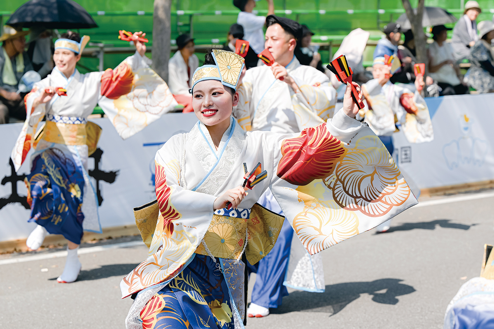
Под лёгкий нарастающий ритм трещат деревянные наруко, и улицы Коти превращаются в один длинный танцевальный зал. Ёсакой, тосский карнавал, собирает почти двести команд со всей страны, и город танцует четыре дня подряд.
История
Праздник, придуманный после войны
Идея родилась в тяжёлом 1953 году, когда Коти только-только поднимался после войны: торговым улицам не хватало жизни, и торгово-промышленная палата города искала большое летнее событие, которое вернуло бы людям настроение. Нужен был танец, который сможет повторить каждый, уличный и запоминающийся, такой, чтобы Коти славился им, как соседняя Токусима славится танцем ава-одори. Музыку заказали композитору Эйсаку Такэмаса (1907–1982), уроженцу Эхимэ, который с 1945 года жил в Коти и сочинил «Ёсакой наруко-одори». Он объездил префектуру, записывал детские песни и деревенские напевы, взял за основу местную ёсакой-буси, городскую застольную песню, известную с эпохи Эдо, и сплёл из неё новую мелодию с куплетами про замки, мосты и китов. Хореографию придумывали мастера японского танца.
Первый Ёсакой прошёл в 1954 году. Слава пришла быстро: в 1959-м танец появился в кинохите «Покидая Южную Тосу», и праздник впервые показали в прямом эфире на всю страну. В 1970-м Ёсакой танцевал на выставке ЭКСПО в Осаке перед гостями со всего мира, а в 1972-м колонна команд вышла на карнавал в Ницце.
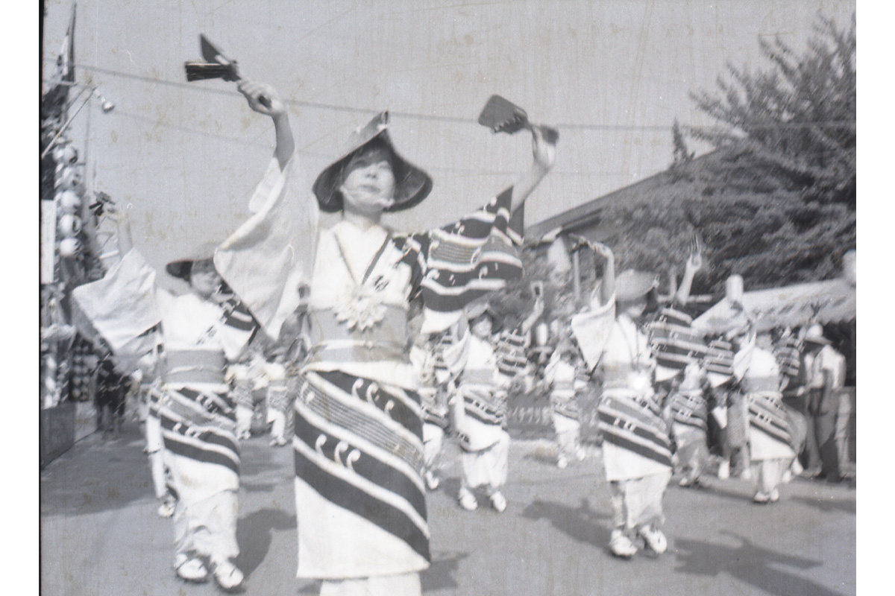
Правила
Два правила и деревянная трещотка
У Ёсакой всего два условия: танцевать с наруко в руках и двигаться вперёд, а в музыку вставить хотя бы фразу ёсакой-наруко-одори. Наруко, деревянная трещотка, потомок «пугала для воробьёв», инструмента, которым стучали над рисовыми полями. Коти, где рис успевает созреть дважды за год, сделал её своим символом: у команд даже трещотки теперь расписаны под цвет костюмов.
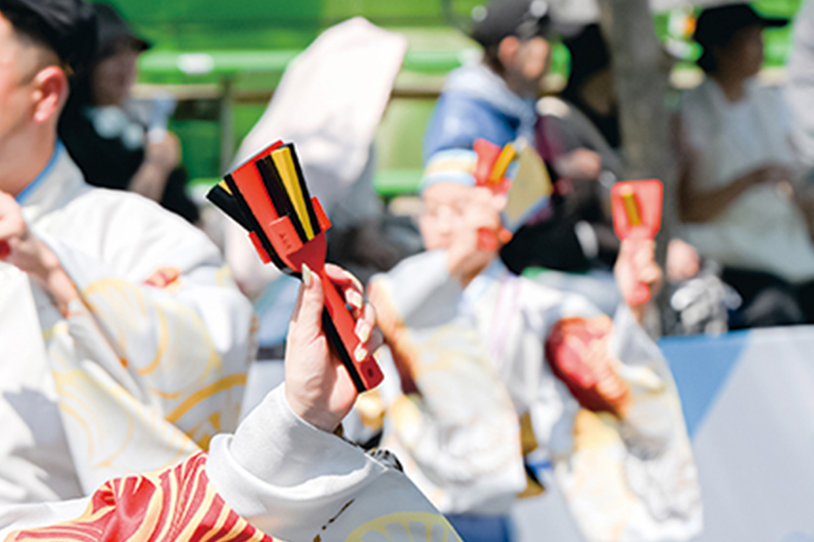
В остальном свобода полная, и в ней весь характер Коти. Команды привозят джаз, рок и самбу, а уже к пятому празднику в уличных рядах танцевали мамбо. На первом Ёсакой выступили 21 команда и 750 танцоров; сегодня их около 180 команд и примерно 18 000 человек, а праздник занимает 16 площадок по всему городу. Идея разлетелась по стране: в Японии проходит около двухсот фестивалей-наследников, начиная с YOSAKOI Soran на Хоккайдо.
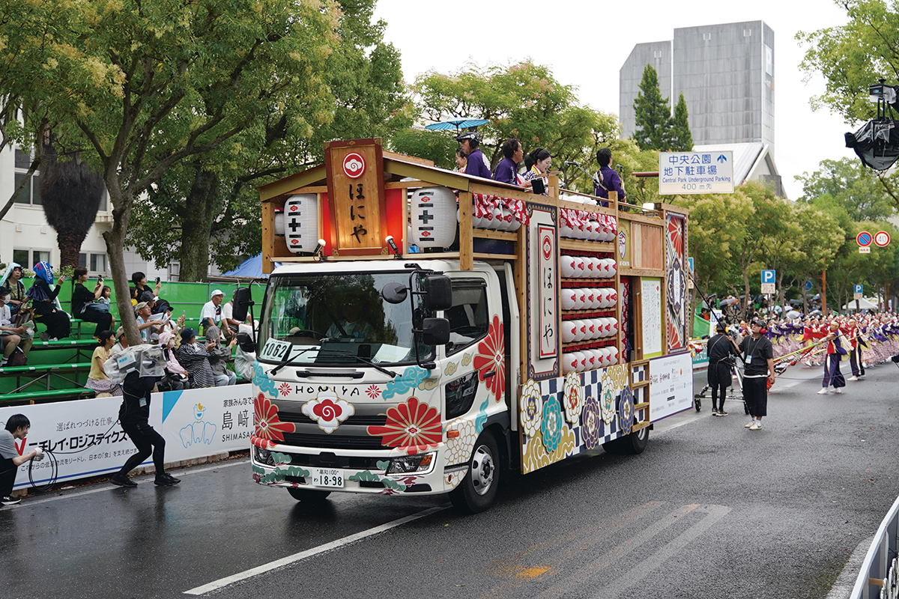
На что смотреть
Костюмы, танец, музыка
Костюмы
Задача костюма показать характер команды с первого взгляда. Основой когда-то служили кимоно и хаппи, короткие куртки, но со временем костюмы разбежались от карнавальных до этнических; встречаются наряды, которые раскрываются узорами при взмахе рук или меняются прямо посреди номера.
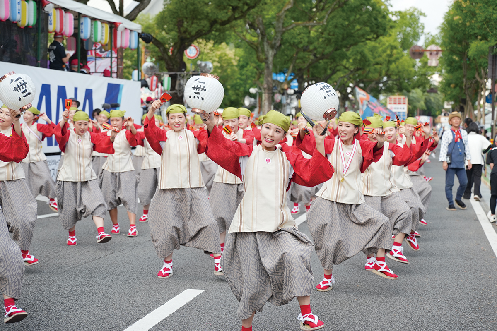
Танец
Кроме двух главных правил, танцор обязан только улыбаться. Сто человек двигаются синхронно и без сбоев, и эта масса энергии производит впечатление на зрителя одной синхронностью.
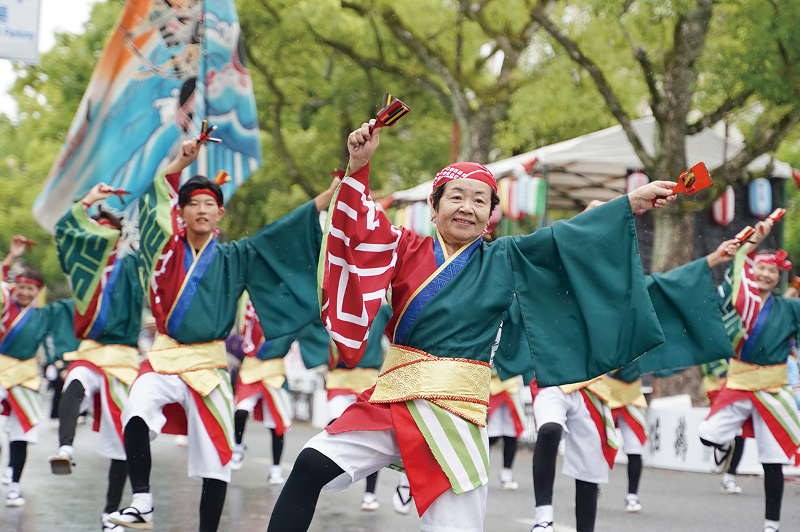
«Самое главное на празднике, чтобы сердце взлетало. Мы взяли за основу классический танец в круг, который танцуют на татами, и переделали его в движение вперёд по улице».
мастер японского танца, ассоциация нихон-буё
Музыка
Музыкальное условие одно: где-то в мелодии должна прозвучать фраза ёсакой-наруко-одори, дальше команда вольна делать что угодно. Вокалисты выкрикивают реплики, мелодии взлетают и замирают, и один номер разворачивается как короткий спектакль. Живые инструменты в ходу до сих пор: сямисэн, барабаны, флейты.
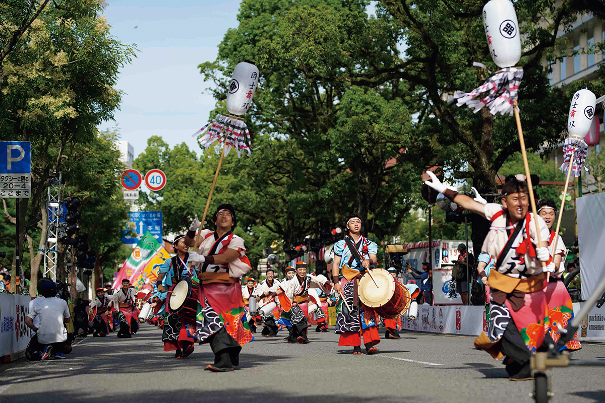
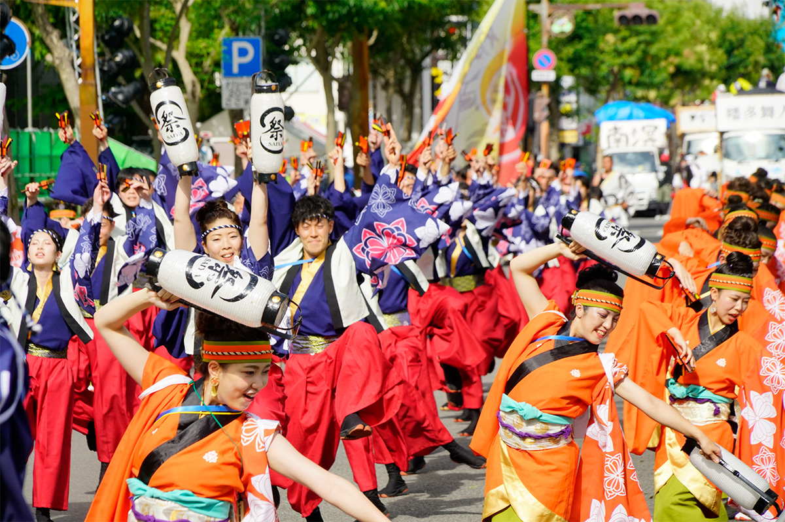
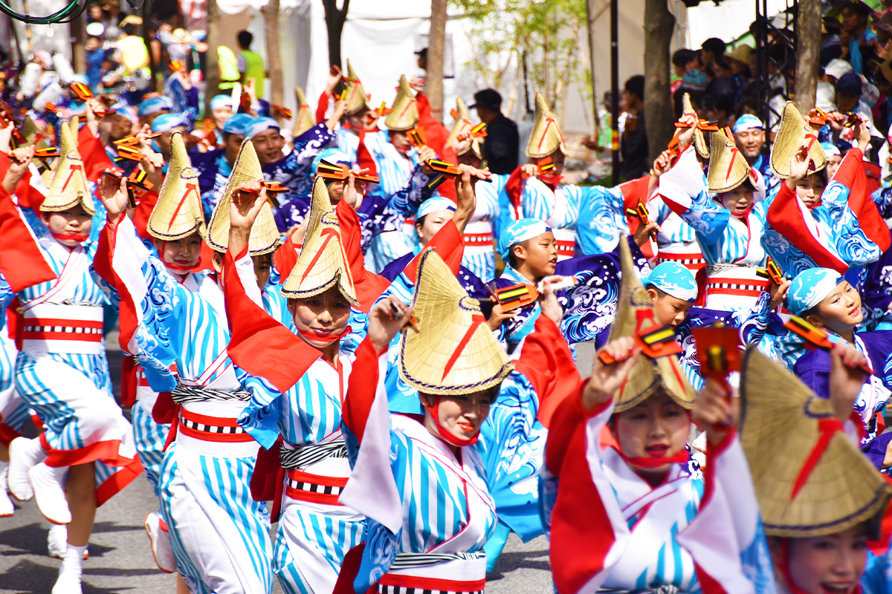
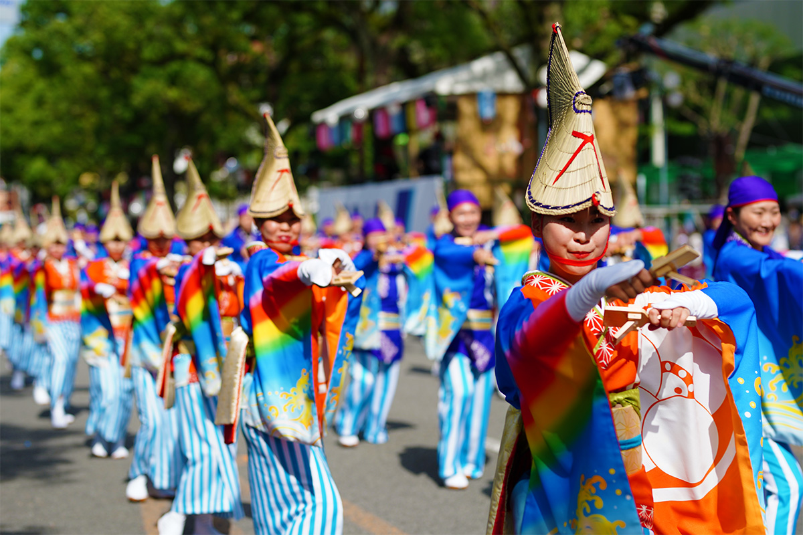
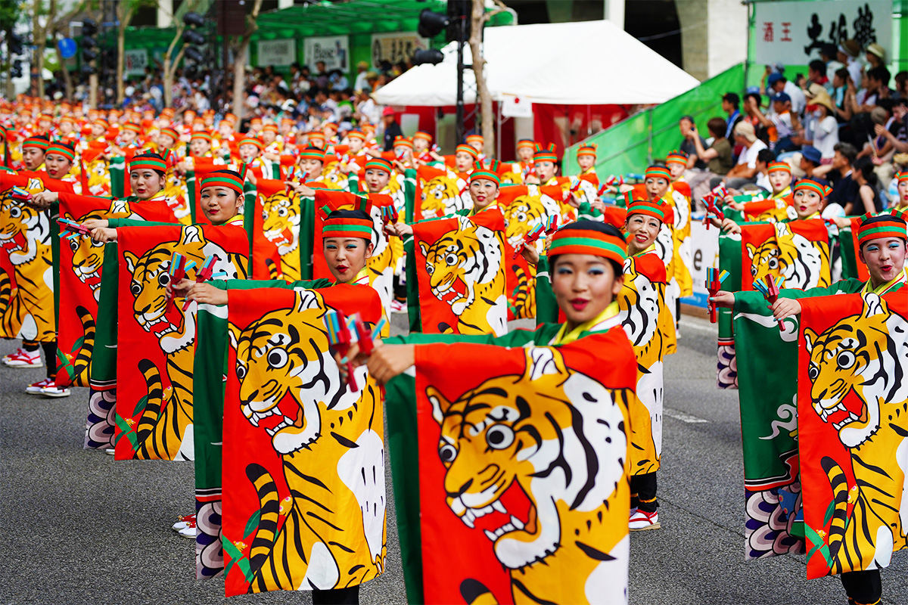
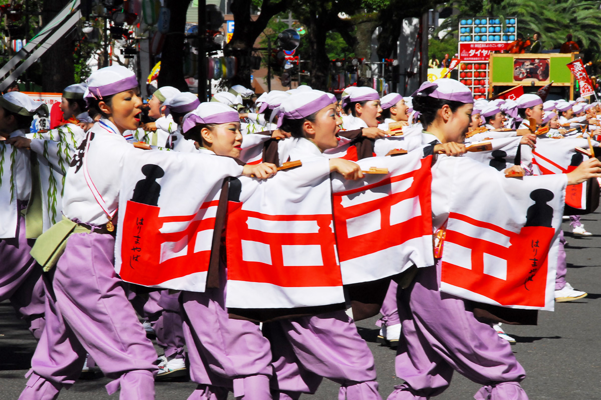
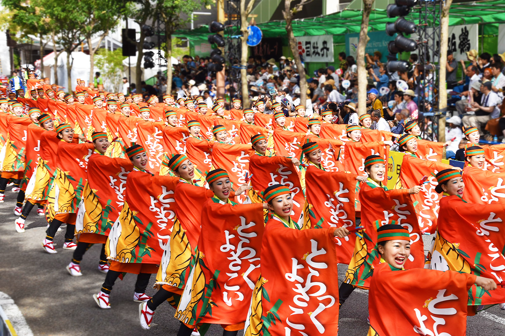
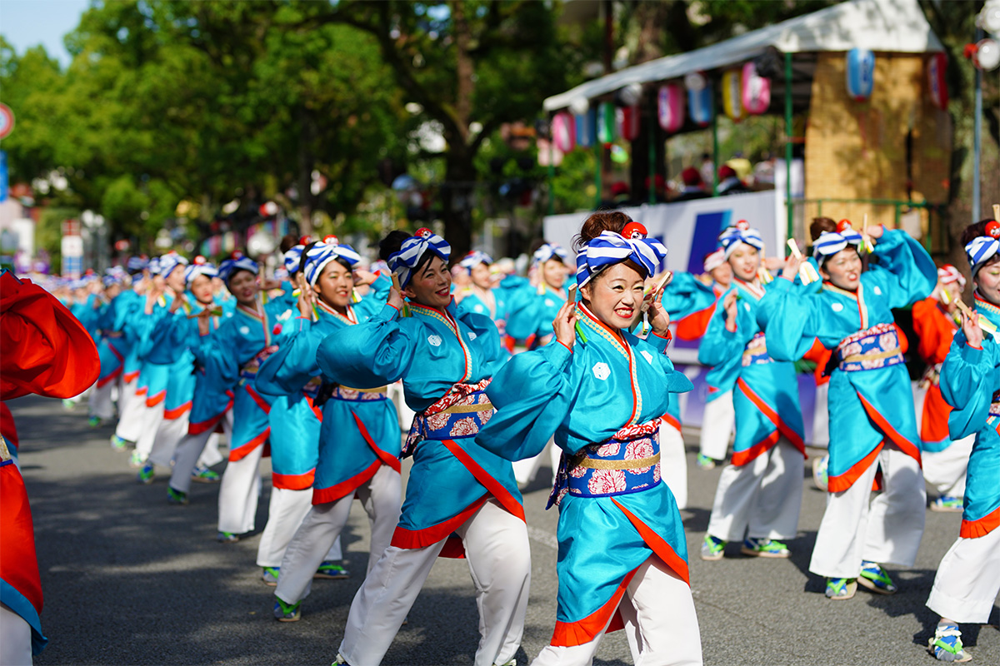
Праздник занимает четыре дня в августе, от предпраздничного вечера до финального гала. Приезжать стоит на любой из них: город танцует везде, и подойти можно прямо к краю дороги.
Фестиваль Ёсакой
- Адрес
- центр города Коти: площадки по всему городу, программа меняется по дням
- Телефон
- +81 88-875-1178
- Часы работы
- ежегодно в августе, четыре дня
Фото: Саюри Оно.